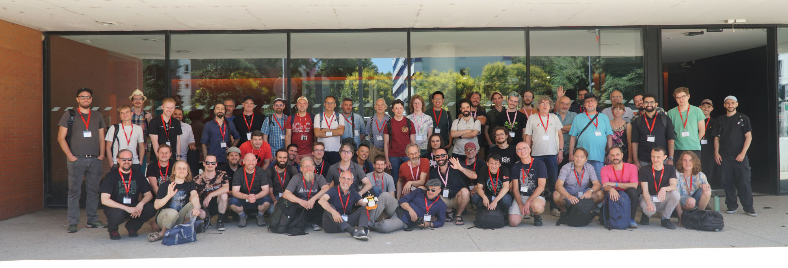

Linux Audio Conference 2025

More pictures of LAC-25 can be found here: https://linuxaudio.de/LAC2025/LAC is the international conference about Free/Open-Source Software for music, sound, and other media with GNU/Linux as the main platform. In 2025, it was held at INSA Lyon (France) under the auspices of Inria, GRAME-CNCM, INSA Lyon, and AFIM on June 25-28.
Important Dates
- March 31, 2025 (
March 24, 2025): Paper/music submission deadline - April 22, 2025 (
April 18, 2025): Review deadline - April 25, 2025: Notification of acceptance
- May 23, 2025: Camera-Ready version deadline
Call for Papers / Presentations / Demos / Workshops
LAC 2025 invites submissions of papers, presentations, and workshops addressing all areas of audio processing based on Linux and open source software.
All submissions and presentations are in English.
Submissions can focus on technical, artistic, and/or scientific issues and target developers and/or users.
This includes (but is not limited to) the following categories:
- Audio and Music Languages
- Audio and AI
- Audio Hardware Support
- Audio Plugins
- Drivers, System and Sound Architecture
- Education and E-Learning
- Games
- Interactive Art
- Interface Design
- Live Coding
- Live Performance
- Media Art
- MIDI, OSC...
- Mobile Audio
- Music Composition
- Music Production
- Networked Audio
- Physical Computing
- Projects Realized using Linux Audio
- Realtime Kernel and Linux Distributions
- Signal Processing and Sound Synthesis
- Sound Spatialization
- Standards and Protocols
- Video
- Etc.
Full Papers
Full papers must be written and presented in English. The length of papers is 4 to 8 pages, with up to 5 keywords, including an abstract of up to 200 words. The abstract will be published on the conference website once the paper has been accepted. Full papers will be available on the website during the conference, and after in the proceedings (which will be published with an ISBN number).
All papers are peer reviewed by a committee of experts from different disciplines. Reviewers may suggest improvements to the author(s), require changes in order to accept the submission, or reject it.
Full papers will be presented during the conference as in-person oral presentations.
Presentations Without an Associated Paper
LAC 2025 welcomes oral presentations not associated to a peer-reviewed paper published in the conference proceedings. Such presentations are selected by the scientific committee, based on a abstract up to 500 words, with up to 5 keywords. No full paper is required in this category. The abstract will be available on the website during and after the conference.
Presentations in this category have the same format as full paper presentations and will hence be presented during the conference as in-person oral presentations.
Demos
Demos are informal project (e.g., plug-in, software, interface, idea, etc.) presentations that will be carried out between the papers presentation sessions.
Workshops
Workshop presentations (max duration of 2h) should be 1-4 pages, with up to 5 keywords, including an abstract of up to 150 words to be published on the conference website. Make sure that your proposal indicates if participants are expected to have a specific level, if there are prerequisites, if you'd like to limit the number of participants, if you have specific technical requirements, etc.
How to Submit Papers / Posters / Workshops?
All the submission should be carried out through this portal: https://lac25.sciencesconf.org/
Choose the relevant submission type.
The required file format is PDF. For the full paper category, authors must use the provided template for paper formatting (see below). For the other categories, your PDF should contain the title of your presentation/demo/workshop, the name of the authors and their affiliations, an abtsrcat/description (you can either use the full paper template or your own).
Please let us know if you need a special technical setup for your presentation.
Templates
We provide only the following LaTeX template (sorry MS-Word users...): template.
Call for Music
We invite submissions of electronic, electroacoustic and mixed music as well as interactive art installations with an emphasis on open source software. A jury will select the compositions and performances to be included in the LAC 2025 conference program according to artistic merit and technical feasibility. Applicants should expect to perform their work themselves and have all resources needed to perform the piece if selected (e.g., instruments, props, other performers, etc.).
Concert Venues
The LAC 2025 musical program will consist of three concerts, two of which will take place at Le Théâtre Astrée (https://theatre-astree.univ-lyon1.fr/qui-sommes-nous/), a concert hall equipped with an 8.4 sound system. For this venue, we are particularly interested in electronic / computer music pieces that will leverage the multichannel set up. The third concert will take place at Le Sucre (https://le-sucre.eu/le-lieu/), an event that will host live coding sets and other performances devised for a night club setting with stereo diffusion.
How to Submit Music
- Use the LAC 2025 Online Submission Tool and select the "music" submission type in the submission form.
- The required file format is PDF, formatted for A4 paper size. Submissions should include: (i) description of piece and set-up, (ii) program notes, (iii) links to samples of work: .wav files, videos, etc., and (iv) a technical rider.
Committees
Organizing Committee
| Nom | Role |
|---|---|
| Romain MICHON | General Chair |
| Pierre LECOMTE | Paper Chair |
| John GRANZOW | Music Chair |
| Stéphane LETZ | Technical Chair |
Other members of the organizing committee:
Jean-Cyrille BURDET // Pierre COCHARD // Yann ORLAREY // Tanguy RISSET
Past Editions
Past editions of LAC are listed on the Linux Audio website: https://linuxaudio.org/lac.html.
Registration and Practical Information
Registration and travel information are shared between JIM and LAC and can be respectively found in the Register and Travel tabs of this webiste.
Diversity Statement
The Linux Audio Conference welcomes and encourages participation by everyone. We want to foster a variety of perspectives, and our goal is to create an inclusive, respectful conference environment that invites participation from people of all races, ethnicities, genders, ages, abilities, religions, and sexual orientation.
LAC is dedicated to providing a harassment-free conference experience for everyone, regardless of gender, gender identity and expression, sexual orientation, disability, physical appearance, body size, race, age or religion. We do not tolerate harassment of conference participants in any form. Sexual language and imagery is not appropriate for any conference venue, including talks. Conference participants violating these rules may be sanctioned or expelled from the conference at the discretion of the conference organizers.